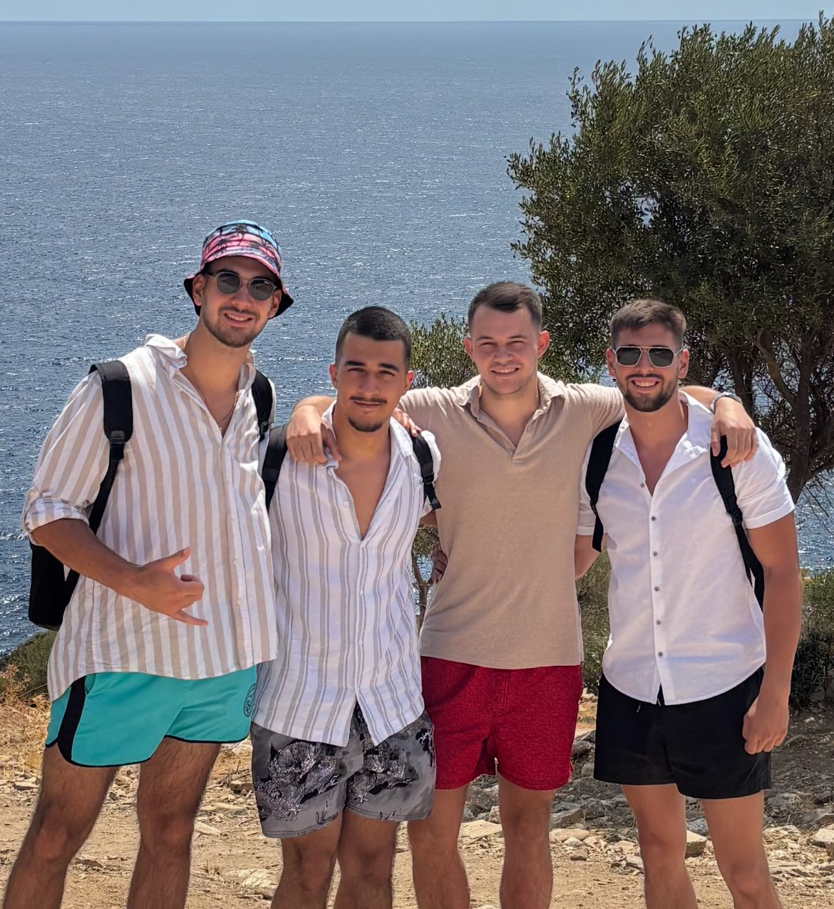

Кои сме ние
KraevCoffee е създадена във Варна от Теодор Краев с идеята да предлага качествено кафе и да развива кафе културата.
Нашата мисия
Нашата мисия е да предлагаме внимателно подбрано кафе, съчетаващо качество и достъпна цена. Ние съхраняваме, транспортираме и изпичаме кафето с внимание и грижа, защото знаем, че всеки детайл има значение за вкуса във вашата чаша. Искаме да създадем култура на кафе, в която всяко зърно има история, всяка чаша има значение и всяка стъпка от пътя е водена от страст и отговорност.
Видео

Екипът на KraevCoffee
Обединени от любовта към кафето